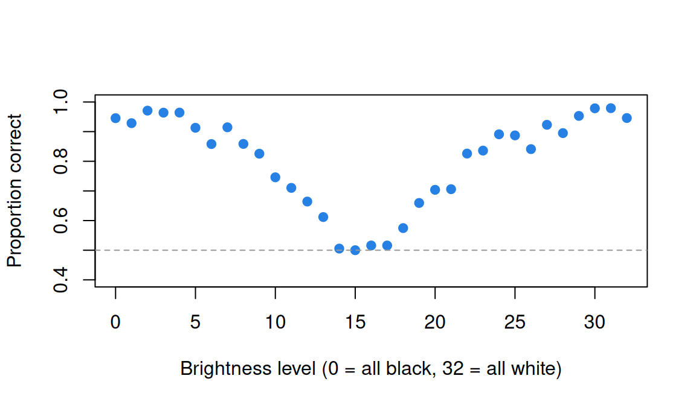

Trials as items: brightness, rotation, Stroop and shots
What this is for
A test usually shows each respondent each item once. Many experiments show each respondent the same few stimuli many times: a patch of a given brightness, a shape rotated by 50 or 150 degrees, a colour word printed in the wrong ink. Each showing is a “trial”, and a table of trials raises questions a test doesn’t. Which trials should be considered as representative of the same “item” (i.e., they should share a common difficulty parameter)? Can a feature of the stimulus, such as its brightness, stand in for that parameter? And is the question even about the respondents? It may be about the stimulus: does changing it change performance for everyone? An experiment can answer that emphatically and say almost nothing about how people differ. This lesson brings the explanatory models of What is an item? to trial data, and ends on what the reliability paradox means for anyone who wants to use an experimental effect to measure people.
Goals
By the end of this lesson you should be able to:
- fit an item response model to trial data, one row per trial, and say what it assumes about trials of the same item;
- replace item difficulties with a function of a feature of the stimulus, and compare the two in and out of sample;
- decompose the variance of trial responses into an average effect, person differences in that effect, and trial noise, and compute the reliability of a person’s effect from it;
- explain why a large, universal experimental effect can come with unreliable individual differences;
- say why ability estimates are biased when respondents choose their own trials, and what adjusting for trial features does about it.
Core ideas
Vocabulary
The lesson uses six terms throughout. The running example is Ratcliff and Rouder’s (1998) brightness experiment: on each trial an observer sees a patch of pixels at one of 33 brightness levels and says whether it came from a bright or a dark distribution.
- Respondent: whatever the IRW’s
idindexes, written \(j\). In the brightness data a respondent is one observer’s session, not a person. - Stimulus: what the respondent is shown on a trial and responds to: a patch of pixels, a pair of shapes, a colour word printed in an ink. For a basketball shot it is the situation the shooter shoots from: the spot on the court, the defence, the clock. A stimulus has more properties than any table records.
- Trial: one showing of a stimulus to a respondent, and the response to it, written \(t\). In the IRW a trial is one row.
- Feature: a recorded property of the stimulus, such as its brightness, the angle of rotation, whether word and ink agree or the distance of a shot, or of the trial’s context, such as what came before or the game clock. An item is usually defined by the values of some features; other features can then explain why items differ in difficulty, as in the LLTM. Properties that aren’t recorded end up in the trial noise.
- Item: a set of trials that the model treats as interchangeable and gives one parameter for difficulty (below, an easiness \(\beta_i\)), written \(i\). We write \(i(t)\) for the item that trial \(t\) belongs to: \(i(\cdot)\) is a function from trials to items, so every trial that shows a level-12 patch has \(i(t) = 12\) and gets the same easiness, \(\beta_{12}\). Which trials to pool is the analyst’s choice, usually made on the values of some features, and the IRW’s
itemcolumn records one choice: the brightness level, the sheet × shape × angle in mental rotation, the word × ink in Stroop, the zone of a basketball shot. Trials of one item need not show the same stimulus: in the mental rotation data, one IRW item holds both a same pair and a mirrored pair of shapes. A respondent usually has many trials of each item, a median of 12 per brightness level; a test usually has one per respondent and item. - Effect: the difference in performance between trials that differ in a feature, such as incongruent minus congruent in Stroop. It has an average over respondents and can differ from one respondent to the next.
Many trials of one item
A test gives each respondent–item pair one row. Here a pair has many: a median of 12 in the brightness data. The rules in the Recall reduce them to one. The common choice is to average each respondent’s trials of an item, but that folds the trial-to-trial noise into the averages, where it can no longer be told apart from differences between respondents; Rouder and Haaf (2019) show that this can shrink effect sizes and correlations alike.
This lesson keeps every trial as its own row instead. Give each brightness level its own easiness \(\beta_i\) and fit the Rasch model to the trials themselves: \[\text{logit}\Pr(x_{jt} = 1) = \theta_j + \beta_{i(t)}, \qquad \theta_j \sim N(0, \sigma^2_\theta),\] where \(x_{jt}\) is 1 if respondent \(j\)’s trial \(t\) is correct and \(\beta_{i(t)}\) is the easiness of that trial’s item. This is the Rasch model of What is an item? with many rows per respondent–item pair, and glmer() (Bates, Mächler, Bolker & Walker, 2015) fits it as before. It assumes that a respondent’s twelfth trial of an item is interchangeable with the first: no practice, fatigue or memory of the trial before (De Boeck & Wilson, 2004).
The model is only as good as the choice of which trials make an item.
Hearts and flowers has four items, each with dozens of trials per respondent. The brightness experiment has 33, and other experiments vary a feature almost continuously (the angle between two shapes, the coherence of moving dots), so that there are dozens of items that differ only in that one feature. Then it is natural to replace their difficulties with a function of the feature.
Replace item difficulties with a feature
The LLTM wrote each item’s easiness as a weighted sum of its features (Fischer, 1973). With one continuous feature \(s\) it is a regression on that feature, \[\beta_{i} = \beta_0 + \beta_1\, g(s_i),\] for some function \(g\). Plotted as probability correct against the strength of the stimulus, the result is what psychophysics calls the psychometric function (Wichmann & Hill, 2001). In the brightness experiment, brightness is the share of white pixels, in 33 levels from all black (0) to all white (32). Each patch was drawn from one of two overlapping distributions, a bright one and a dark one, and a response is correct if it names the right one. Near the middle level, 16, a patch could easily have come from either, so accuracy should be lowest there and rise with the distance from it: \(g(s) = |s - 16|\). The Rasch model above has 33 easinesses, one per level. The line \(\beta_0 + \beta_1 |s_i - 16|\) has two, an intercept and a slope, and says that every level the same distance from the middle is equally easy.
Try it: one easiness per level, or a line through them
Each dot is one brightness level in rr98_accuracy, pooled over the 30 sessions and sized by its number of trials. Choose how to model the levels’ easinesses and where the middle of the brightness range sits. Between the line and one easiness per level is a third option: one easiness per distance from the middle (17 parameters), which pools the two levels at each distance but doesn’t force a line.
With the middle at 16, the line gives up about 43 units of log likelihood to one easiness per level, and the AIC prefers the 33 parameters. Move the middle to 15.5: both distance models improve, and one easiness per distance now has the lowest AIC of the three. The data put the point of greatest confusion a little below the design’s middle; a feature model has to be told this.
The question may be about the stimulus
In an experiment the parameter of interest is often an effect: how much slower people are when word and ink disagree (Stroop, 1935), or how much accuracy falls per 50 degrees of rotation (Shepard & Metzler, 1971). So far the response has been right or wrong. In the Stroop task nearly every response is right, and the effect is measured in time: incongruent trials are slower. So this section models the response time of each trial instead, with a linear mixed model, the simplest model that carries the argument about reliability. Response time and the speed-accuracy tradeoff models response times properly: on the log scale, with speed as a trait of the respondent and time intensity as a property of the item, and alongside accuracy. Here, with each respondent given their own effect: \[\text{RT}_{jt} = \mu + \theta_j + (\delta + \gamma_j)\,c_t + \varepsilon_{jt}, \qquad \theta_j \sim N(0, \tau^2_\theta),\ \gamma_j \sim N(0, \tau^2_\gamma),\ \varepsilon_{jt} \sim N(0, \sigma^2),\] where \(\theta_j\) is respondent \(j\)’s usual speed (higher is slower), \(c_t\) is 1 on an incongruent trial and 0 on a congruent one, \(\delta\) is the average effect and \(\gamma_j\) is respondent \(j\)’s departure from it. There are now two questions. Does the manipulation work: is \(\delta\) far from 0? And do people differ in it: is \(\tau_\gamma\) large enough to rank them?
With \(L\) trials of each kind (congruent and incongruent), a respondent’s observed effect (mean incongruent RT minus mean congruent RT) has variance \(\tau^2_\gamma + 2\sigma^2/L\) across respondents, so its reliability is \[\rho_\gamma = \frac{\tau^2_\gamma}{\tau^2_\gamma + 2\sigma^2/L}.\] The group test of the average effect, over \(N\) respondents, is \(t = \hat\delta \big/ \sqrt{(\tau^2_\gamma + 2\sigma^2/L)/N}\). The between-person variance \(\tau^2_\gamma\) is in the numerator of the reliability and the denominator of \(t\): the less people differ, the larger \(t\) and the lower the reliability. Hedge, Powell and Sumner (2018) draw the consequence: an effect becomes established, and the experiment that shows it popular, when people differ little in it, and that is what leaves the effect unreliable as a measure of individuals. This is the reliability paradox.
Try it: where the variance lives
The trial SD (0.17 s) and the SD of respondents’ mean speed (0.10 s) are about what the Stroop table below shows; the group test assumes 150 respondents.
Shrink the person SD toward 0. The t statistic rises, from 24 to 42, as the reliability of the effect falls to 0: the less people differ, the clearer the manipulation and the emptier the ranking. More trials help slowly, because a difference carries the noise of two means: at a person SD of 0.05 s it takes about 200 trials of each kind to reach 0.9. The reliability of mean RT stays near 0.97.
When respondents choose their trials
In a laboratory the experimenter assigns the trials. Elsewhere respondents choose them. A basketball player’s shots are trials, each a make or a miss. The item might be the zone the shot is taken from, but no two shots from a zone are the same stimulus, and the player picks which to take. Whether a shooter’s chance changes from shot to shot is an old question (Gilovich, Vallone & Tversky, 1985); ours is simpler. A shooting percentage mixes skill with selection.
Try it: choosing shots
Two shooters take 2,000 threes each. A contested three is 0.8 logits harder than an open one, and shooter A makes 40% of open threes. The numbers are invented, at roughly the scale of professional three-point shooting.
With equal skill and the default mixes, B shoots 28.1% to A’s 34.9% and looks 0.31 logits worse; with shot type in the model, the tie is restored. Give B a true edge of 0.3 logits and the percentages come out nearly equal, while the adjusted gap finds the edge. The adjustment works because the widget knows the one feature that makes shots differ. When choices also depend on things the data don’t record, no adjustment for recorded features is complete.
Simulate
The code simulates a mental rotation experiment: 50 respondents meet each of four angles ten times in each of two sessions. Accuracy falls by 0.4 logits per 50 degrees on average, and respondents’ slopes vary with SD slope_sd. It fits one parameter per angle, a line in angle, and a line with random slopes to session 1, scores their predictions of session 2 with the IMV, and retests each respondent’s angle cost (accuracy at the two small angles minus the two large). The first run takes 30 to 45 seconds, mostly loading lme4.
With the seed as written (slope_sd <- 0.3), the angle effect is −0.41 (z = −8.7), the line predicts as well as one parameter per angle (IMV 0.023 against 0.022), random slopes add a little (0.026), and the angle cost retests at 0.41 against 0.91 for accuracy. Set slope_sd <- 0: the group effect is as clear (z = −9.5), yet the cost still retests at 0.20, because on the probability scale a constant logit cost is smaller near the ceiling, so the cost partly re-measures accuracy. At slope_sd <- 1 the random slopes’ IMV rises to 0.050 and the cost retests at 0.83.
Download this code to run it with more respondents, trials or sessions in your own R session.
With real data
Code
library(lme4)
options(digits = 7) # R's default, in case a .Rprofile changes it
# The IMV (Domingue et al., 2024): coin() turns a mean log likelihood into the
# weight w >= 0.5 of a coin with the same expected log likelihood per toss, and
# imv() is the expected return, (w1 - w0) / w0, of betting with the better coin.
coin <- function(ll) {
if (ll <= log(0.5)) return(0.5)
uniroot(function(w) w * log(w) + (1 - w) * log(1 - w) - ll, c(0.5, 1 - 1e-12), tol = 1e-12)$root
}
mean_ll <- function(y, p) mean(y * log(p) + (1 - y) * log(1 - p))
imv <- function(y, p0, p1) (coin(mean_ll(y, p1)) - coin(mean_ll(y, p0))) / coin(mean_ll(y, p0))
# k-fold cross-validation over trials. fit(formula, data) returns a model whose
# predict(type = "response") gives probabilities for held-out rows. Returns the
# IMV of each model over the first one, averaged over folds.
cv_imv <- function(d, formulas, fit, k = 10, seed = 1) {
set.seed(seed)
fold <- sample(rep(1:k, length.out = nrow(d)))
P <- sapply(formulas, function(f) {
p <- numeric(nrow(d))
for (i in 1:k) p[fold == i] <- predict(fit(f, d[fold != i, ]), d[fold == i, ],
type = "response", allow.new.levels = TRUE)
p
})
sapply(names(formulas)[-1], function(m)
round(mean(sapply(1:k, function(i) imv(d$resp[fold == i], P[fold == i, 1], P[fold == i, m]))), 4))
}rr98_accuracy is the main example: 33 items, the brightness levels, and a feature that should explain their difficulties. mentalrotation_wolf_2024 is the contrast, where the feature explains less than which trials the IRW pools into an item. enkavi_2019_stroop is the failure case for individual differences: an effect nearly everyone shows, retested. nbashots_sim closes the section: simulated basketball shots, where respondents choose their trials and the true skill is known. Download the code; it needs lme4. Keying: in all four tables 1 is a correct response (for shots, a make).
Brightness: 33 items, one feature
Ratcliff and Rouder (1998) had three observers judge whether a patch of pixels came from a bright or a dark distribution, over about ten sessions each. The IRW keeps the blocks with accuracy instructions, and its id is an observer’s session (processing script).
Code
rr <- read.csv("https://redivis.com/api/v1/tables/datapages.item_response_warehouse:v60_0.rr98_accuracy/rows?format=csv")
rr$level <- as.integer(sub("i ", "", rr$item)) # brightness, 0 (black) to 32 (white)
rr$observer <- sub(" .*", "", rr$id) # "jf 2" is observer jf's second session
rr$dist <- abs(rr$level - 16) # distance from the middle level
c(trials = nrow(rr), observers = length(unique(rr$observer)), sessions = length(unique(rr$id)),
levels = length(unique(rr$level))) trials observers sessions levels
12205 3 30 33 Code
p_level <- tapply(rr$resp, rr$level, mean)
round(p_level[c("0", "8", "15", "16", "17", "24", "32")], 2) 0 8 15 16 17 24 32
0.95 0.86 0.50 0.52 0.52 0.89 0.95 Code
plot(as.integer(names(p_level)), p_level, pch = 19, col = "#2780e3", ylim = c(0.4, 1),
xlab = "Brightness level (0 = all black, 32 = all white)", ylab = "Proportion correct")
abline(h = 0.5, lty = 2, col = "grey60")
Accuracy is 0.95 at both ends and 0.50 at level 15. Now three models of the levels’ easinesses, each with random effects for observer and session:
Code
# Observers and their sessions are crossed with the levels: every session meets
# every level many times. Three accounts of the levels:
# per_level: one easiness for each of the 33 levels (the Rasch-style description)
# symmetric: one for each distance from the middle (17)
# distance: a straight line in distance from the middle (2)
m_level <- glmer(resp ~ 0 + factor(level) + (1 | observer) + (1 | id), rr, binomial)
m_sym <- glmer(resp ~ 0 + factor(dist) + (1 | observer) + (1 | id), rr, binomial)
m_dist <- glmer(resp ~ dist + (1 | observer) + (1 | id), rr, binomial)
round(fixef(m_dist), 2)(Intercept) dist
-0.17 0.24 Code
anova(m_dist, m_sym, m_level)| npar | AIC | BIC | logLik | -2*log(L) | Chisq | Df | Pr(>Chisq) | |
|---|---|---|---|---|---|---|---|---|
| m_dist | 4 | 12948.24 | 12977.87 | -6470.118 | 12940.24 | NA | NA | NA |
| m_sym | 19 | 12928.37 | 13069.16 | -6445.187 | 12890.37 | 49.86195 | 15 | 0.0000127 |
| m_level | 35 | 12924.81 | 13184.15 | -6427.406 | 12854.81 | 35.56263 | 16 | 0.0033262 |
Code
# Share of the variance in the 33 level easinesses the straight line accounts for
e <- fixef(m_level)
pred <- fixef(m_dist)[1] + fixef(m_dist)[2] * abs(0:32 - 16)
round(cor(e, pred)^2, 2)[1] 0.9Each step of distance from the middle adds 0.24 logits. The line accounts for 90% of the variance in the 33 level easinesses, yet the likelihood-ratio tests reject it against one easiness per distance (χ² = 49.9 on 15 df), and that in turn against one per level (χ² = 35.6 on 16 df); the AICs are 12,948, 12,928 and 12,925. Out of sample:
Code
# Out of sample: which account of the levels predicts held-out trials best?
# (glm, without the session effects, which are tiny; see below.)
cv_imv(rr, list(mean = resp ~ 1, distance = resp ~ dist, symmetric = resp ~ factor(dist),
per_level = resp ~ factor(level)),
function(f, d) glm(f, binomial, d)) distance symmetric per_level
0.0772 0.0783 0.0759 Against the overall proportion correct, the line earns an IMV of 0.0772; one easiness per distance adds a thousandth, and one easiness per level loses one. Two parameters predict new trials as well as 33.
What about the respondents? There are three observers, 33 levels and over 12,000 trials.
Code
VarCorr(m_level) Groups Name Std.Dev.
id (Intercept) 0.051195
observer (Intercept) 0.000000Code
round(tapply(rr$resp, rr$observer, mean), 3) jf kr nh
0.724 0.715 0.726 Code
round(range(tapply(rr$resp, rr$id, mean)), 2) # the 30 sessions[1] 0.68 0.77The SD between observers is 0, and between sessions 0.05 logits; the observers’ accuracies run from 0.715 to 0.726, the sessions’ from 0.68 to 0.77, partly because sessions drew different levels. For this experiment that is a success: psychophysics wants every observer to be a replicate, so that the psychometric function describes the visual system. There is no individual to measure, and the design didn’t ask for one.
Stroop: an effect nearly everyone shows
Enkavi et al. (2019) gave a large online sample a battery of self-regulation tasks and brought 150 back to estimate long-term retest reliability. In their Stroop task a colour word (red, green or blue) appears in one of the three inks, and the respondent names the ink. The IRW item is word × ink; position counts repetitions of an item, not the trial’s place in the session (processing script).
Code
st <- read.csv("https://redivis.com/api/v1/tables/datapages.item_response_warehouse_3:v8_0.enkavi_2019_stroop/rows?format=csv")
st$inc <- as.integer(st$itemcov_condition == "incongruent")
table(item = st$item, condition = st$itemcov_condition)[, ] condition
item congruent incongruent
blue_blue 10768 0
blue_green 0 5384
blue_red 0 5384
green_blue 0 5384
green_green 10768 0
green_red 0 5384
red_blue 0 5384
red_green 0 5384
red_red 10768 0Code
c(respondents = length(unique(st$id)), retested = length(unique(st$id[st$wave == 2])))respondents retested
523 151 Code
round(tapply(st$resp, list(incongruent = st$inc, wave = st$wave), mean), 3) wave
incongruent 1 2
0 0.974 0.967
1 0.924 0.924Code
# Response times of correct trials with a recorded time
ok <- st[st$resp == 1 & !is.na(st$rt), ]
summary(as.vector(table(ok$id[ok$wave == 1], ok$inc[ok$wave == 1]))) # trials of each kind Min. 1st Qu. Median Mean 3rd Qu. Max.
7.00 45.00 47.00 45.55 48.00 48.00 Accuracy is high (0.97 congruent, 0.92 incongruent), so we use response times of correct trials, a median of 47 of each kind (congruent and incongruent) per respondent.
Code
# Each respondent's mean RT on congruent and incongruent trials, and the effect (incongruent - congruent)
by_person <- function(d) {
m <- tapply(d$rt, list(d$id, d$inc), mean)
data.frame(id = rownames(m), congruent = m[, 1], incongruent = m[, 2],
effect = m[, 2] - m[, 1], mean_rt = (m[, 1] + m[, 2]) / 2)
}
w1 <- by_person(ok[ok$wave == 1, ])
round(colMeans(w1[, -1]), 3) congruent incongruent effect mean_rt
0.672 0.795 0.123 0.734 Code
round(c(sd_effect = sd(w1$effect), t = mean(w1$effect) / (sd(w1$effect) / sqrt(nrow(w1))),
n = nrow(w1), positive = sum(w1$effect > 0)), 3)sd_effect t n positive
0.061 46.230 522.000 520.000 Incongruent trials are slower by 0.123 s on average (t = 46.2), and 520 of the 522 respondents show the effect. The SD of the observed effects is 0.061 s. Where does that variance live?
Code
# Where the variance lives, at wave 1: a random intercept (speed) and a random
# slope (the person's Stroop effect) for each respondent, and trial noise.
s1 <- lmer(rt ~ inc + (1 + inc | id), ok[ok$wave == 1, ], REML = FALSE)
round(fixef(s1), 3)(Intercept) inc
0.672 0.122 Code
VarCorr(s1) Groups Name Std.Dev. Corr
id (Intercept) 0.098450
inc 0.049254 0.232
Residual 0.167106 Code
tau <- attr(VarCorr(s1)$id, "stddev"); sig <- sigma(s1); L <- 47
# Reliability of each respondent's observed effect and mean RT with L trials of
# each kind (the Go deeper callout derives these)
round(c(effect = tau[[2]]^2 / (tau[[2]]^2 + 2 * sig^2 / L),
mean_rt = tau[[1]]^2 / (tau[[1]]^2 + sig^2 / (2 * L))), 2) effect mean_rt
0.67 0.97 Code
# Trials of each kind for a reliability of 0.9 in the effect
round(2 * sig^2 * 0.9 / (tau[[2]]^2 * (1 - 0.9)))[1] 207The person SD of the effect is 0.049 s, against 0.098 s for mean speed and 0.167 s for a single trial. With 47 trials of each kind, the reliability of each respondent’s effect is 0.67; of their mean RT, 0.97. A reliability of 0.9 for the effect would take about 207 correct trials of each kind. And over time:
Code
w2 <- by_person(ok[ok$wave == 2, ])
b <- merge(w1, w2, by = "id", suffixes = c("_1", "_2"))
nrow(b)[1] 150Code
round(c(effect = cor(b$effect_1, b$effect_2), mean_rt = cor(b$mean_rt_1, b$mean_rt_2),
congruent = cor(b$congruent_1, b$congruent_2),
incongruent = cor(b$incongruent_1, b$incongruent_2)), 2) effect mean_rt congruent incongruent
0.44 0.61 0.54 0.64 Code
round(c(effect_positive_wave2 = mean(b$effect_2 > 0)), 2)effect_positive_wave2
0.98 For the 150 respondents seen twice, the effect retests at 0.44 and mean RT at 0.61; 98% still show the effect. With 240 trials of each kind and three weeks apart, Hedge et al. (2018) found intraclass correlations of 0.60 and 0.66 for the Stroop RT cost in two studies, against 0.77 and 0.72 for congruent RT. How much of the distance from 1 is trial noise, and how much is people changing?
Code
# The same question inside the model: each respondent has a true speed and a true
# effect at each wave, and the model estimates how those correlate across waves,
# with trial noise set aside.
ok2 <- ok[ok$id %in% b$id, ]
ok2$w1 <- as.integer(ok2$wave == 1); ok2$w2 <- 1 - ok2$w1
s12 <- lmer(rt ~ 0 + factor(wave) + inc:factor(wave) + (0 + w1 + w2 | id) +
(0 + w1:inc + w2:inc | id), ok2, REML = FALSE)
VarCorr(s12) Groups Name Std.Dev. Corr
id w1 0.107756
w2 0.106039 0.590
id.1 w1:inc 0.047573
inc:w2 0.041497 0.789
Residual 0.172126 With trial noise set aside, the model puts the correlation of respondents’ true effects across sessions at 0.79, and of their true speed at 0.59: much of what separates 0.44 from 1 is the 47 trials. The model assumes normal trial noise, which response times don’t have, so I’d hold 0.79 loosely (Rouder & Haaf, 2019, make the case for such estimates). Put together: the effect is large relative to how much people differ in it (SD 0.049 s around 0.122 s), which is why 520 of 522 show it, and the same small SD is why 47 trials leave each person’s effect with a reliability of 0.67. The paradox is not a failure of the experiment. It was built to find an effect everyone has.
So would I use an experimental effect to rank people? It turns on two numbers the group analysis doesn’t report: the person SD of the effect against the trial noise, and the number of trials of each kind. If the question is whether a manipulation works, a small person SD is an asset. If it is who is more affected, I’d want the variance decomposition first, and I’d plan the trials from the Go deeper formula, not from the size of the group effect. A large, universal effect is evidence that the manipulation works, not that it measures people.
Shots: chosen trials with a known answer
The widget in When respondents choose their trials had two shooters and one feature. nbashots_sim is a simulated season: 400 shooters and 136,368 shots, from the IRW’s simsyn source of simulated and synthetic tables (generating script). It is built to resemble NBA shooting but contains no NBA data. The item is the shot zone, from the restricted area under the basket to threes above the break; trial_ columns record each shot’s distance, court location and game clock. Each simulated shooter has a skill and a role, and chooses shots: bigs take most of theirs at the rim, and better shooters take more long twos and threes. Because the data are simulated, the true skill comes with them (cov_true_theta), so we can check each analysis against the answer. With a Redivis account, irw::irw_fetch("nbashots_sim", source = "sim") fetches the same table.
Code
# nbashots_sim is simulated, from the IRW's simsyn source: the shooters' true
# skill is in cov_true_theta. The item is the shot zone; the trial_ columns give
# the distance (feet), court location, a three-point flag, the game clock and
# whether the shot came in the last two minutes of a quarter.
sh <- read.csv("https://redivis.com/api/v1/tables/datapages.irw_simsyn:v1_2.nbashots_sim/rows?format=csv")
c(shots = nrow(sh), shooters = length(unique(sh$id))) shots shooters
136368 400 Code
round(cbind(share = prop.table(table(sh$item)), made = tapply(sh$resp, sh$item, mean)), 2) share made
above_break_three 0.27 0.35
corner_three 0.07 0.39
midrange 0.17 0.42
paint 0.17 0.41
restricted_area 0.33 0.62Shots at the rim go in 62% of the time; shots from every other zone, 35% to 42%.
Code
# Each shooter's percentage against their true skill, and by role
pl <- aggregate(cbind(pct = resp, dist = trial_dist) ~ id + cov_role + cov_true_theta, sh, mean)
round(c(pct_vs_skill = cor(pl$pct, pl$cov_true_theta), dist_vs_skill = cor(pl$dist, pl$cov_true_theta)), 2) pct_vs_skill dist_vs_skill
0.68 0.42 Code
aggregate(cbind(pct, true_skill = cov_true_theta, dist) ~ cov_role, pl, function(v) round(mean(v), 2))| cov_role | pct | true_skill | dist |
|---|---|---|---|
| big | 0.50 | 0.01 | 7.89 |
| guard | 0.42 | -0.05 | 15.42 |
| wing | 0.43 | -0.01 | 15.54 |
A shooter’s percentage correlates 0.68 with their true skill, and better shooters shoot from farther out (0.42). The bigs make 50% of their shots to the wings’ and guards’ 42% and 43%, with the same average skill: they shoot from 8 feet on average, the others from 15.
Code
# Skill from the makes alone, and with the shot in the model as trial features
fit_fast <- function(f, d) glmer(f, d, binomial, nAGQ = 0)
s0 <- fit_fast(resp ~ 1 + (1 | id), sh)
s1 <- fit_fast(resp ~ item + trial_dist + trial_late + (1 | id), sh)
pl$u0 <- ranef(s0)$id[as.character(pl$id), 1]
pl$u1 <- ranef(s1)$id[as.character(pl$id), 1]
round(c(makes_only = cor(pl$u0, pl$cov_true_theta), with_shot = cor(pl$u1, pl$cov_true_theta)), 2)makes_only with_shot
0.69 0.92 Code
aggregate(cbind(makes_only = u0, with_shot = u1) ~ cov_role, pl, function(v) round(mean(v), 2))| cov_role | makes_only | with_shot |
|---|---|---|
| big | 0.17 | 0.04 |
| guard | -0.11 | -0.05 |
| wing | -0.08 | 0.00 |
Code
round(c(sd_makes_only = attr(VarCorr(s0)$id, "stddev"), sd_with_shot = attr(VarCorr(s1)$id, "stddev"),
sd_true = sd(pl$cov_true_theta)), 2)sd_makes_only.(Intercept) sd_with_shot.(Intercept) sd_true
0.24 0.31 0.31 From the makes alone, each shooter’s random effect correlates 0.69 with true skill; with zone, distance and the late clock in the model, 0.92. The bigs’ edge falls from 0.17 logits to 0.04. The spread moves the other way. The SD of skill is 0.24 from the makes alone, against 0.31 with the shot in the model and 0.31 among the true values. Because the better shooters take the harder shots, their choices pull the percentages together: choosing trials can hide differences between people as well as create them.
Code
# Out of sample: what does each account of the item add over the shooters alone?
cv_imv(sh, list(shooters = resp ~ 1 + (1 | id),
zone = resp ~ item + (1 | id),
zone_distance = resp ~ item + trial_dist + (1 | id),
zone_distance_late = resp ~ item + trial_dist + trial_late + (1 | id)),
fit_fast, k = 5) zone zone_distance zone_distance_late
0.1172 0.1299 0.1327 Over shooters alone, the zone earns an IMV of 0.117, distance brings it to 0.130 and the late clock to 0.133. Here five zones and a straight line in distance are close to the whole account of a shot, because that is how the simulation was written: a make depends on skill, zone, distance and the clock, and on nothing else. Whether the zone is as good a definition of the item for real shots is problem 5.
Problems
Trials for a target reliability. Starting from the RT model in The question may be about the stimulus, derive the number of trials of each kind needed for a reliability \(R\) of each respondent’s effect. With the Stroop estimates, how many correct trials of each kind give 0.8? Show that the average effect \(\delta\) doesn’t enter, and say what changes if incongruent trials are noisier than congruent ones.
Angle², shape and pair. In
mentalrotation_wolf_2024, add a squared angle term (asc9/mrot.Rdid), then shape, then angle × pair. Which improves out-of-sample prediction, and by how much? Now give each respondent a random effect for pair type: what would such an effect mean psychologically?Who is the respondent? In
rr98_accuracy, refit the level model with the observer as the only respondent, then with the session only. Which is right for a question about the visual system, and which for a question about practice across sessions? What does the zero observer SD imply for each?Late-game threes (PS9#2). Two shooters take the same number of threes in a season. One takes most of them in the last minutes of close games, the other early in quarters. Should their percentages be compared directly? What trial features would you want before ranking them, and which of those could the shooter’s own choice depend on?
Real shots (PS9#2). Download one season of NBA.com shot data from Samangy’s collection (GitHub). The files carry no licence, so they aren’t in the IRW; download them for your own use. The starter code after this list reshapes a season into the columns of
nbashots_sim, so the shots code above runs on it. (a) Starting from item = zone, add distance, then a smooth function of distance, then the shot’s angle, then the shot type (trial_action: dunk, layup, jump shot and so on), and score each withcv_imv(). How good a definition of the item is the zone? (b) Compare the SD of player skill from your best model with the one fromnbashots_sim. Which is larger, and why might they differ? Think about who plays in the NBA, what a finer item absorbs, and where the simulated value came from. (c) Does the ordering of players by skill change as the item gets finer?Design a rotation measure. Design a 20-minute mental rotation measure of individual differences in the cost of rotation: angles, trials per angle, pair types, and whether to score accuracy, time or both. Check its retest correlation with the simulation, and say what the ceiling result in Simulate implies for scoring accuracy.
Challenge (open). Write a model in which a shooter’s choice of shot depends on their skill, or on their recent success. What would identify skill separately from choice? Selection models in economics (Heckman, 1979) are one starting point. I don’t know of a satisfying answer for shot data, where the set of shots a player declined is never observed.
Starter code for problem 5:
Code
# NBA_2024_Shots.csv, unzipped from the repository above
x <- read.csv("NBA_2024_Shots.csv")
x <- x[x$BASIC_ZONE != "Backcourt", ]
zone <- c("Restricted Area" = "restricted_area", "In The Paint (Non-RA)" = "paint",
"Mid-Range" = "midrange", "Left Corner 3" = "corner_three",
"Right Corner 3" = "corner_three", "Above the Break 3" = "above_break_three")
nba <- data.frame(id = x$PLAYER_ID, item = zone[x$BASIC_ZONE],
resp = as.integer(x$EVENT_TYPE == "Made Shot"),
trial_dist = x$SHOT_DISTANCE, trial_locx = x$LOC_X,
trial_locy = x$LOC_Y - 5.25, # hoop at (0, 0), as in nbashots_sim
trial_late = as.integer(x$MINS_LEFT < 2),
trial_action = x$ACTION_TYPE)
nba <- nba[nba$id %in% names(which(table(nba$id) >= 100)), ] # players with 100 or more shots
rare <- names(which(table(nba$trial_action) < 200))
nba$trial_action[nba$trial_action %in% rare] <- "other" # so every fold has every type
# predict() on a glmer fit can't rebuild splines::ns() for held-out rows, so
# make the spline columns once, on the full data, and put them in the formula
D <- splines::ns(nba$trial_dist, 6); colnames(D) <- paste0("d", 1:6)
nba <- cbind(nba, D)Going further
- Hedge, C., Powell, G., & Sumner, P. (2018). The reliability paradox: Why robust cognitive tasks do not produce reliable individual differences. Behavior Research Methods, 50(3), 1166–1186. https://doi.org/10.3758/s13428-017-0935-1. Retest reliability of seven classic tasks, and the argument that low between-person variance is what makes their effects replicable.
- Rouder, J. N., & Haaf, J. M. (2019). A psychometrics of individual differences in experimental tasks. Psychonomic Bulletin & Review, 26(2), 452–467. https://doi.org/10.3758/s13423-018-1558-y. Hierarchical models that keep trial noise apart from person differences, applied to Hedge et al.’s data.
- Enkavi, A. Z., Eisenberg, I. W., Bissett, P. G., Mazza, G. L., MacKinnon, D. P., Marsch, L. A., & Poldrack, R. A. (2019). Large-scale analysis of test–retest reliabilities of self-regulation measures. Proceedings of the National Academy of Sciences, 116(12), 5472–5477. https://doi.org/10.1073/pnas.1818430116. Survey and task measures retested side by side; the source of this lesson’s Stroop data.
- Wichmann, F. A., & Hill, N. J. (2001). The psychometric function: I. Fitting, sampling, and goodness of fit. Perception & Psychophysics, 63(8), 1293–1313. https://doi.org/10.3758/BF03194544. How psychophysics fits accuracy as a function of stimulus strength.
- Baayen, R. H., Davidson, D. J., & Bates, D. M. (2008). Mixed-effects modeling with crossed random effects for subjects and items. Journal of Memory and Language, 59(4), 390–412. https://doi.org/10.1016/j.jml.2007.12.005. Crossed respondents and items in experimental psychology: the models of What is an item?, seen from the other side.
- De Boeck, P., & Wilson, M. (Eds.). (2004). Explanatory item response models: A generalized linear and nonlinear approach. Springer. https://doi.org/10.1007/978-1-4757-3990-9. Item and person features in one framework.
- Jansen, M. G. H. (2016). Poisson and gamma models for reading speed and error. In W. J. van der Linden (Ed.), Handbook of item response theory: Vol. 1. Models (pp. 245–259). Chapman and Hall/CRC. https://doi.org/10.1201/9781315374512. A handbook chapter on Poisson and gamma models for counts of errors and reading times.
- From the IRW: the reliability paradox vignette looks at the reliability of experimental tasks across IRW tables.
Data sources
Data from the Item Response Warehouse (each table name links to its IRW page); references from IRW biblio.
rr98_accuracy: Ratcliff, R., & Rouder, J. N. (1998). Modeling Response Times for Two-Choice Decisions. Psychological Science, 9(5), 347-356. http://doi.org/10.1111/1467-9280.00067. Licence: GPL-3.0.mentalrotation_wolf_2024: Wolf, J. E., & Larsen, M. (2024). A New Procedure and Stimulus Set for Examining Cross-Modality Mental Rotation. Journal of Open Psychology Data, 12(1). https://doi.org/10.5334/jopd.99. Licence: CC BY 4.0.enkavi_2019_stroop: Enkavi, A. Z., Eisenberg, I. W., Bissett, P. G., Mazza, G. L., MacKinnon, D. P., Marsch, L. A., & Poldrack, R. A. (2019). Large-scale analysis of test-retest reliabilities of self-regulation measures. Proceedings of the National Academy of Sciences, 116(12), 5472-5477. https://doi.org/10.1073/pnas.1818430116. Licence: CC BY 4.0.nbashots_sim: Domingue, B. W. (2026). NBA shots simulation [R script]. Item Response Warehouse. https://github.com/ben-domingue/irw/blob/main/data/simsyn/nbashots_sim.R. Licence: CC BY 4.0.
For instructors
- Source: EDUC 252 class 9 (slides c9, 17–23: trials in psychology, limited versus continuous variation, mental rotation) and problem set 9 (#2, NBA field goals as trials), with the code in
ben-domingue/252:c9/mrot.Randps9/shots.R. - Timing: the core ideas and widgets take about 45 minutes; the four analyses are a 40-minute lab. The mental rotation cross-validation takes about half a minute, the Stroop models a few seconds each and the shots code about a minute. Problem 5 needs a download of about 3 MB per season and runs in a few minutes.
- Changed from 252: the LEVANTE rotation data (slide 22) and the NBA shot data (Samangy, GitHub) aren’t in the IRW, so
mentalrotation_wolf_2024stands in for the first. The shot data carry no licence, so the IRW has a simulated stand-in,nbashots_sim(simsyn), for the worked example, and problem 5 takes the same code to a season of the real data, which readers download themselves. The pair-type finding in the rotation data, the brightness analysis and the Stroop variance decomposition are new. - Data notes:
nbashots_simis read from simsyn v1.2 (CC BY 4.0); its IRW reference is the generating script. Its make probability depends only on skill, zone, a straight line in distance and the late clock, so finer accounts of the item can’t help there; in real shots they do (problem 5). The simulated skill SD (0.35 logits) is larger than a real season’s. The rotation table’s items don’t record pair type; it is recovered fromrespandresp_raw. In the Stroop table,positioncounts repetitions of an item, so trial order within a session isn’t available and practice or fatigue can’t be modelled from it. - Held back: learning across trials as change in \(\theta\) (dynamic models) is left open; response times on the same trials are in Response time and the speed-accuracy tradeoff and Process models for response time; adaptive task batteries in Item banks and adaptive testing. Hearts and flowers repeated across blocks is not taken further here.
- Solutions: held back in
solutions/trials.qmd(not published). Problem 7 is open.